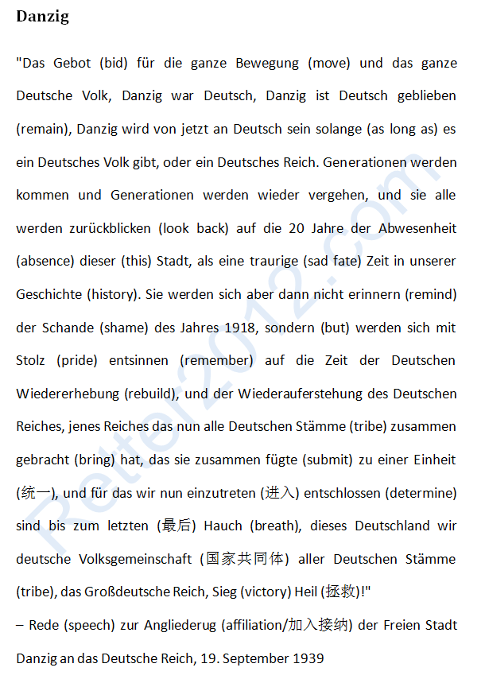

返回主页
挑战原文：但泽（Danzig），Maniac！

语法分析和符号约定
日耳曼人大迁徙（蛮族入侵）
普鲁士（Prussia）地图
格但斯克（波兰语），德语称但泽（Danzig），是波兰北部沿海地区的最大城市和最重要的海港。
最最初，中欧和东欧没有国家没有城市。但泽（Danzig）地区偶有游牧部落经过，可能是凯尔特，或者日耳曼，或者斯拉夫。按照大陆的“周口店人”逻辑，波兰人一直就生活在那里了（波兰一战后才建国）。
但泽（Danzig）最初的居民是东斯拉夫人。997年以后，东斯拉夫人接受了罗马天主教。自从14世纪初到1945年的600多年间，但泽（Danzig）的绝大多数人口都是德意志人，德语是主要语言。在16世纪宗教改革以后，该市的居民以新教徒占绝对优势。根据1923年的人口统计数据，95%的市民是德意志人，只有3%的人口是波兰人。
第一次世界大战德国战败。根据美国总统威尔逊要求建立波兰国。如果按照民族分布来划分国界，新成立的波兰一个内陆国家。波兰人希望得到但泽（Danzig）作为出海口。然而，但泽（Danzig）的绝大部分人口都是德国人。所以，在1919年《凡尔赛条约》中规定波兰得到通往波罗的海的但泽（Danzig），而但泽仍保持自由自治地位。但泽（Danzig）内政权归德国居民，但外交事务由波兰政府的控制。
1939年8月27日但泽（Danzig）的日耳曼人发动骚乱。几天后，也就是1939年9月1日在纳粹入侵波兰几天。1939年9月3日，英法单方面对德国宣战（英法此举显然是意料之外的，把希特勒吓懵了）。正是但泽（Danzig）的地缘政治冲突直接导致了第二次世界大战的爆发。
1939年9月17日苏联官方告知波兰驻莫斯科大使：由于波兰在与德国之间的战争里已表现出国家内部的腐败、政府已呈现解体的状态，故苏联先前与其签订过的任何协定将不再有效，且波兰已成了一个混乱而危险的地区，苏联已无法漠视乌克兰和白俄罗斯的同胞，故苏联政府已命令红军跨过边界，保护乌克兰和白俄罗斯居民，令其摆脱被不明智的领导人（波兰政府）所卷入的战争，让他们回归平静的生活。
随后，苏联红军进入波兰。波兰被苏德瓜分。奇怪的是，英国和法国为什么没有对苏联宣战呢？
1945年，但泽（Danzig）原有的主体居民（德意志人）的25％在战争中死亡。幸存下来的德意志居民被苏联红军驱逐到奥得河以西的德国剩余领土。从此，波兰人占据但泽（Danzig）并改名格但斯克（波兰语），现在的居民绝大部分都是徒天主教。
东西德统一时与苏联签订协议：德国放弃对东普鲁士的领土要求并承认现有边界的合法性。但不要忘了1939年的《苏德互不侵犯条约》（Deutsch-sowjetischer Nichtangriffspakt）。
德语五大发音秘诀
想一想现在的Ukraine的克里米亚（Crimea），更不要忘了普鲁士（Prussia）的柯尼斯堡（哥尼斯堡）。相比较而言，几个无人小岛算什么？
名言佳句（俾斯麦）
文摘（战争和航海）
德国何以获得以色列信任
魔戒的“大一统”铭文（英德）
Kissinger: How the Ukraine crisis ends
Dark Lord Sauron Vs. Wizard Gandalf《魔戒》
将魔戒上的铭文日耳曼神话腾格瓦文字直接翻译至英语和德语，如下：
英文：
One Ring to rule them all, One Ring to find them,
One Ring to bring them all and in the darkness bind them
德文：
Ein Ring, sie zu knechten, sie alle zu finden,
Ins Dunkel (dark) zu treiben und ewig (eternal/永恒) zu binden
欧洲大陆一直有“大一统”的传统，从罗马到拿破仑，从希特勒到斯大林。所以来自大论的“统一”企图都被视为对WAPS的征服和奴役。这不，卡迈隆（Cameron）在2013年又提议要公投“是否脱离欧盟”。而德国、俄国和法国一直努力促成欧洲（至少是西欧）的统一，不管付出何种代价。
傅莹：中国国防弱了，世界就和平了？
傅莹的父亲阿民。阿民是蒙古族著名哲学家艾思奇的学生，曾官至新中国内蒙古军区宣传部副部长。在父亲的教导与家庭氛围的熏陶下，傅莹从小就热爱读书。
“文化大革命”，阿民蒙冤入狱。傅莹16岁到内蒙古一个生产建设兵团插队。1973年，傅莹作为工农兵学员推荐入北京外国语学院（1972年，王沪宁作为工农兵推荐学院开始学法语）。傅莹的专业是英语，第二外语是法语，为了适应工作的需要，她又学习了罗马尼亚语。
1977年毕业于北京外国语大学
1978－1982年任驻罗马尼亚使馆随员。注意，江泽民70年代初在罗马尼亚工作，会罗马尼亚语。
1985－1986年在英国肯特大学深造，获硕士学位。
1972年， 尼克松总统访华。1973年3月10日日，中共中央恢复邓小平职务。1973年7月10日，中央专案组将《关于林彪反党集团反革命罪行的审查报告》报中共中央。
1973年，美国总统尼克松的水门事件进入高潮，赎罪日战争爆发，石油禁运。
version:1.0; jobnet@188.com © retter2012.com